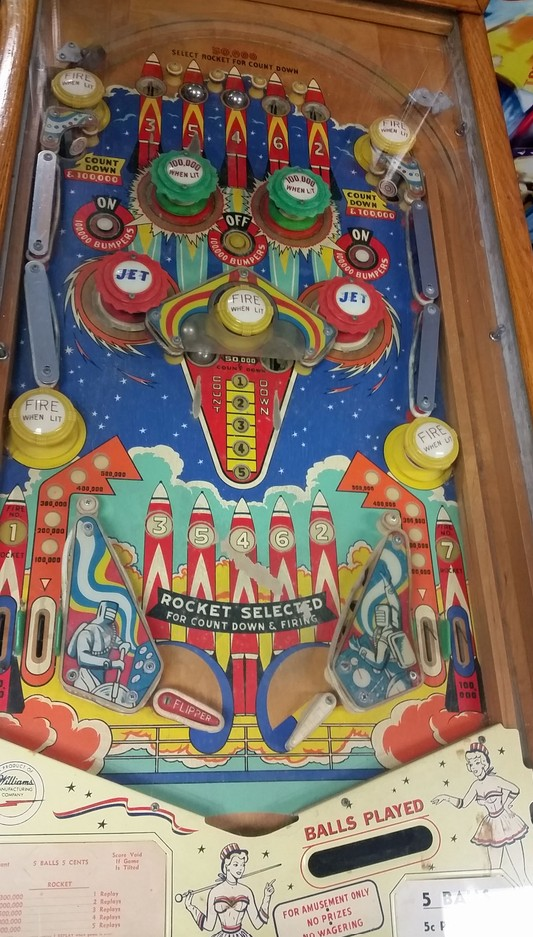

Not to be confused with Rocket Ship (Gottlieb, 1958) or Rocket III (Bally, 1967).
The main progression on Rocket is to fire the numbered rockets on the backglass. Rockets 1 and 7 can be fired instantly by draining a ball down the leftmost and rightmost out lane respectively. Firing rockets 2 through 6 is a multi-step process:
At the end of the game, you earn 1, 2, 3, 4, or 5 replays for having fired any 3, 4, 5, 6, or 7 consecutively numbered rockets. I have not confirmed what award would be given for making two separate sets of 3 (1-2-3 and 5-6-7).
Green pop bumpers score 10,000 points or 100,000 when lit, and are lit and unlit by the On/Off Pop Bumpers buttons in the upper half of the table. The red pop bumpers always score 10,000 points.
There are no in lanes, and flippers back up directly to the slingshots, which always score 10,000. There are 2 out lanes on each side. The near out lanes score 100,000 points times the current number in the Countdown sequence, for a maximum of 500,000 points and being worth less and less as a rocket is closer to being fired. Far out lanes score 100,000 points and instantly fire the #1 (left) and #7 (right) rockets.
There is no end of ball bonus or extra ball feature. Tilt ends game. Since there are no score reels and all scores are in increments of 10,000 points, the match feature is indicated by a star lighting up next to one of the numbers in the 10,000s column on the right of the backglass.
The below picture of Rocket's playfield was taken from the Internet Pinball Database, where it was originally provided by Joe Roth.
